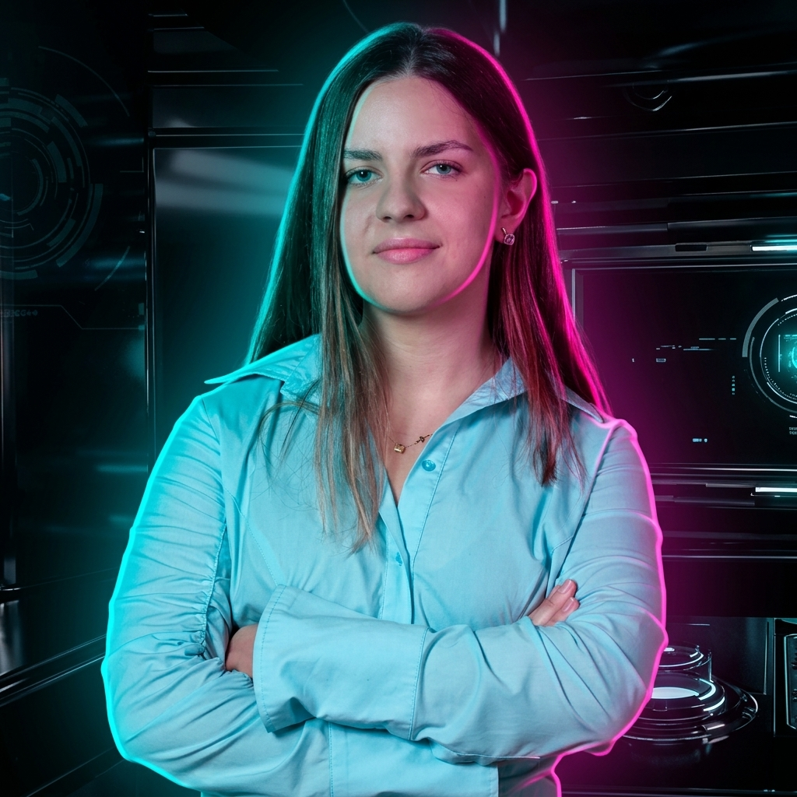

I am a bioengineering student at The Hong Kong University of Science and Technology (HKUST), recipient of the Full-tuition admission scholarship and the Beyond Academic Awards scholarship. I am passionate about combining engineering, technology and business to create a healthier future for people across the globe. |
admin@hkust:~$ load_data --category=skills
Loading skills module... [OK]
Languages: Russian (native), English (C1), Mandarin (HSK4)
Technical: Python, HTML, Microsoft Azure, Thunkable, Figma, Excel, PowerPoint, Canva
Soft: Problem-solving, leadership, analytical thinking, stress resistance, creativity, communication
Lab/Engineering: Electrochemical sensors, data analysis, circuit design (basic), 3D printing (basics)
admin@hkust:~$ _
Electrochemical sensor for blood biomarkers from saliva. Research @ HKUST Bioelectronics Lab.
Details >[ Lab‑on‑a‑chip device ]
Climate-adaptive water device. 2nd prize Global Sustainability Challenge 2025‑26.
Details >[ AI sign language translation app ]
150+ testers, 4 charitable partnerships, 2 business accelerators.
Details >[ Charitable mHealth project ]
Meditation & thought exchange. 30+ team members from 5+ countries, audience 5k+, 10+ webinars.
Details >Research on real-world applications and problems of AI.
Details >Hands-on biotech experiment (2022).
Details >Ready to innovate? Reach out across the digital void.